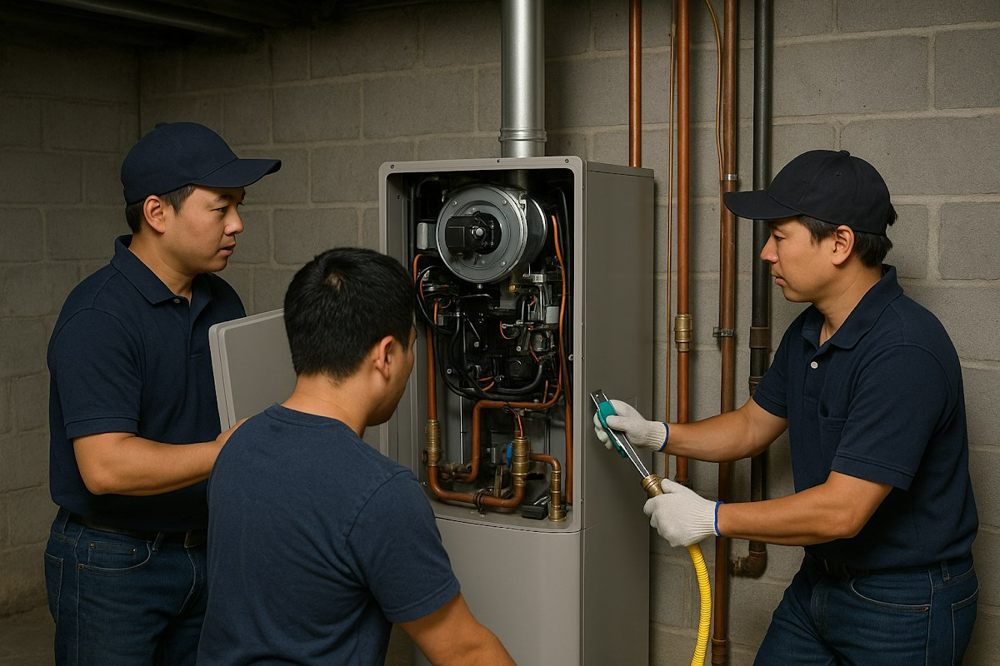
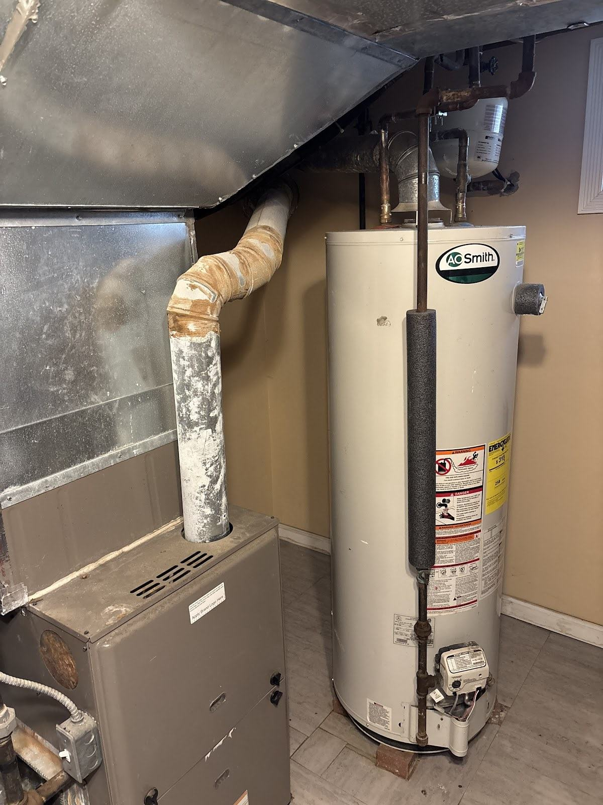
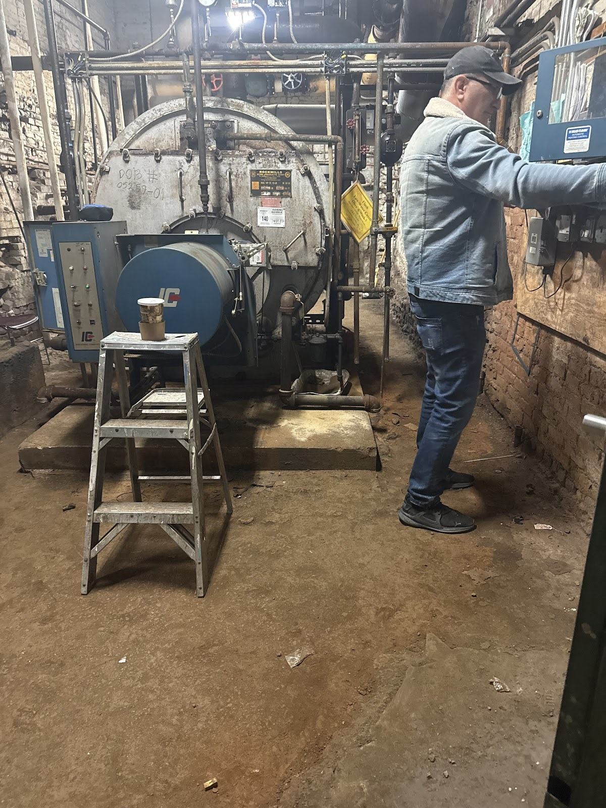
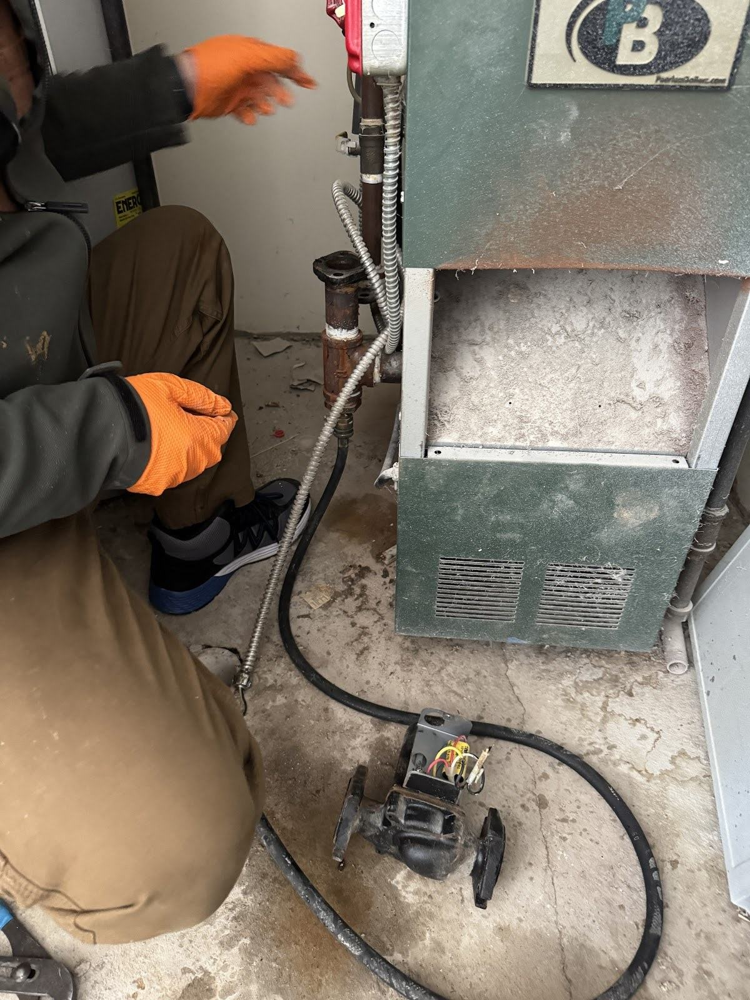

Michaels Plumbing Professionals · Queens, NY
Plumbing & heating.
Fresh Meadows.
Boilers, furnaces, water heaters and plumbing. Start with a conversation about what needs attention.
Call (917) 299-1851 ↗Send a text ↗Plumbing & heating services
Plumbing &
heating services.

- 01
Heating: boilers and furnaces
Tell us whether the question concerns a boiler or furnace.
Enquire ↗ - 02
Water heaters
Share the water-heater type and what you noticed.
Enquire ↗ - 03
Plumbing
Describe the fixture, pipe or plumbing issue.
Enquire ↗ - 04
HVAC installation and repair
Share the HVAC system and the installation or repair question.
Enquire ↗
How it works
A conversation.
A closer look.
A decision.
Call or message.
Tell us the issue and where in Fresh Meadows you need help.
We take a look.
Discuss the equipment, condition and scope.
You decide.
Ask your questions before choosing the next step.

Equipment & details
Boilers. Furnaces.
Water heaters.

Service area
Fresh Meadows,
Queens.
Ask about heating, water heaters, plumbing or HVAC installation and repair in Fresh Meadows.
Discuss your location ↗Common questions
Before we talk.
How do I ask for an estimate?
Call or send a message with the issue, the equipment involved and your neighborhood. Ask what information is needed to discuss an estimate.
What if I smell gas or have an urgent problem?
If you smell gas, suspect carbon monoxide or see smoke, leave the building and call 911 or your gas utility from outside. For a leak or loss of heat, avoid hazards and seek appropriate help; do not rely on this website in an emergency.
Which area can I ask about?
Ask about service in Fresh Meadows, Queens. Contact the business to confirm the location and scope of your request.
What should I put in a message?
Include your name, a way to reach you, your neighborhood and a short description of the issue. You can attach a clear equipment photo in your own messaging or email app. Avoid sensitive personal information.